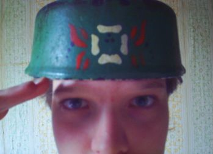

РЖАВАЯ СЕТЬ #8
электронный андеграунд-журнал
Ржавая Сеть #8:
1021
поиск подключений завершен
102122
ожидание соединения
1037
инсталяция клиента
1119
прием первых пакетов
начало буферизации
1125
старт чтения пакетов
Прошло полтора года с выпуска прошлого номера, и это слишком большой срок.
Есть вероятность, что это - последний номер Ржавой Сети, так как мотивация
постепенно перемещается в зону более "быстрого дайса", пользуясь термином
Gatekeeper'a =) Тем не менее, будут материалы - будет и журнал.
О том, в насколько "медленный дайс" погружено издание, свидетельствует тот
факт, что только в этом году пошел фидбэк на номера 1-2. Некоторые жалуются,
что NOD32 ругается на первый номер. Да, в первом номере есть фрагменты
вредоносного кода, но запустить их не сможет ни один пользователь, не могущий
самостоятельно понять, что там за "вирус". Также сообщают о том, что, как ни
странно, некоторые ссылки, публикованные в номерах 1-2 уже не работают. Да, это
так: не все сайты живут по 3-4 года, кое-кого наш зин уже пережил. Так что
берите на изготовку Internet Wayback Machine и будет вам счастие.
С подачи С. Шульги издание немного засветилось на "Веб-планете", были и другие
упоминания издания за эти полтора года. Помимо прочего, теперь вы всегда можете
быть в курсе новостей журнала и не только, подписавшись на RSS-канал.
Также читатели приглашаются в социальную сеть Neon Lightning и на форум Cult of
Russian Underground, основатели которого выделили раздел для обсуждения нашего
журнала.
Гость этого номера - пермский медиахудожник Сергей Тетерин, создатель
различных инсталляций и медиа-проектов, о которых можно узнать из его интервью,
а так же ознакомиться с его текстом "Маримба-мэн". Да, это не новый текст, но
однозначно заслуживающий публикации, тем более что его предваряет небольшое
авторское вступление. Кстати об отступлениях:
Много о чем можно написать, много чего можно использовать против меня же,
давай попробуй), вселенная этого не забудет. Хотелось бы передать приветы всем
кто считает себя киберпанком и хотя бы знает что такое бег силы. Знаете,
потенциально я не хочу раскрыватся, мое внутреннее не хочет этого, но все же...
хочется сказать для чего я это делаю...вспомните лук. в нем много слоев, так же
и во мне, я изучил все,покрайней мерее я дошел до ничего. осознаторы меня
поймут. цикл знаний и его форма потрясающие, да и сама форма вместе с цветом
просто поражают воображение. В нашем мире много граней познания, даже очень
много. Изучить все - возмжно, но понадобится ли все? да, конечно. Не стоит
забывать о разширеном взгляде и о засореном глазе... эти вещи тоже прекрасны,
являют собой пси ловушки опыту, который хотят получить не ведая последствий,
если же последстия известны и даже являються целью то тогда киберпанк стает
осознатором. Контроль последствий, собственый догмат решений,своего рода
стандарт процедуры восприятия и действия должен быть в голове у каждого , это
своего рода ос на которую ты должен настроить себя. Как Вам фраза - великие
глупцы?
Что касается сцены как таковой - в этом году урожай музыкальных релизов.
Наши старые друзья Denergized выпустили альбом VHS Recall на венгерском лэйбле
Advoxya (и не забыли упомянуть журнал в интервью =), в дефолт-сити не дремлет
Spin Provider, возник новый d'n'b проект CMOS Killers (если помните
cclub.h1.ru, то люди оттуда), и даже я как-то отсвечиваю на дарктранс-сцене =)
А для привлечения внимания в нашем зине нечто вроде конкурса: Баба Зина.

Воин mix2ra в виртуальном шлеме готов к несению службы!
Так что читательницы могут также попробовать стать Бабами Зина, выслав какие-то
фотограммы =)
СИСТЕМНЫЕ ТИПЫ РАЗДРАЖИТЕЛЕЙ:
;*<;&___)(*?:%;№"! И ИХ ПОСЛЕДОВАТЕЛЬНОСТИ
БУКВЫ И ИХ ПОСЛЕДОВАТЕЛЬНОСТИ
1234567890 И ИХ ПОСЛЕДОВАТЕЛЬНОСТИ
ЗВУКИ И ИХ ПОСЛЕДОВАТЕЛЬНОСТИ
ФОРМА И ВСЕ ЕЕ ПРЕДСТАВЛЕНИЕ
ВКУС И ВСЕ ЕГО РАЗНОВИДНОСТИ, ВКЛЮЧАЯ НЕИЗВЕСТНЫЕ
И АБСОЛЮТНО ЛЮБЫЕ ПОСЛЕДОВАТЕЛЬНОСТИ ПОСЛЕДОВАТЕЛЬНОСТЕЙ ЭТИХ
ПОСЛЕДОВАТЕЛЬНОСТЕЙ ПРИ ВЗАИМОДЕЙСТВИИ ОДНОГО ИЛИ НЕСКОЛЬКИХ ИНФОРМАЦИОННЫХ
ПОЛЕЙ, КОТОРЫЕ СОЗДАЮТ НЕИЗВЕСТНО ГИБРИДНУЮ СТРУКТУРУ, В КОТОРОЙ ЕСТЬ
ИМПУЛЬС(СМЫСЛ). РАЗДРАЖИТЕЛЕМ МОЖЕТ БЫТЬ ЛЮБОЙ ОБЬЕКТ, СУБЬЕКТ И ИХ
ГРУППЫ (СМЕШАННЫЕ И ОДНОТИПНЫЕ) В ЗАВИСИМОСТИ ОТ ВОСПРИЯТИЯ ОБЬЕКТЫ МОГУТ ИМЕТЬ
АССОЦИАТИВНЫЙ ОПЫТ, ПОСЛЕДСТВИЕМ КОТОРОГО ЕСТЬ ДЕЙСТВИЕ. КОНЕЦ СВЯЗИ
ALiEN Assault & ASMADEUS, SF crew
Содержание:
| Zeitgeist |
| Интервью с Сергеем Тетериным | by ALiEN Assault |
| dnsqo - mass DNS reverse tool | by zE-d0g |
|
| Wetware |
| Keep it Clean! | by ALiEN Assault |
|
| 0wn3d |
| Подмена данных в WEP-пакетах | by flufx |
| Раскрытие защищенной информации в PDF | by ALiEN Assault |
| Интервью с Psy Factor | by ALiEN Assault |
| Art |
| Маримба-мэн | by Сергей Тетерин |
| Убегая на Юг | by Solenoid & Keik |
| Неправильная информация | by ASMADEUS |
| Принцесса на обочине | by полковник Васин |
| Стихи | by JK.Bionik & Sieg |
| 4D Tesseract demo | by Sieg |
Пока никакой периодичности выхода не определено. Издание будет выходить по
мере поступления материалов, так что ЧИТАТЕЛИ МОГУТ ПОВЛИЯТЬ НА СКОРОСТЬ
ВЫХОДА, прислав свои оригинальные материалы для публикации (другими
словами, не надо ныть в сети - мол Ржавая Сеть сдохла, или новый номер
требовать, как будто в магазине). Приветствуются любые материалы, имеющие
отношение к киберкультуре - статьи, арт, программы и т.д. Ограничения:
01: Материалы должны быть оригинальными;
02: НЕ принимаются материалы об играх, либо абстрактные рассуждения и манифесты,
отражающие чьё-то субъективное мнение о киберпанк-культуре;
03: Общий объём выпуска не будет существенно превышать 1 мБ. Так что крупные
творения вроде музыки в MP3/OGG, к сожалению, публиковать возможности не будет;
04: Редакция оставляет за собой возможность правки материалов (коррекции ошибок,
опечаток и т.д.);
05: Формат M$ Word автоматически снижает шансы материала на публикацию.
Издано SF 2K8
www: rusty.mrtech.ru
e-mail: cyb3rz3n@narod.ru

{kind=link}
{kind=link}
{kind=link}